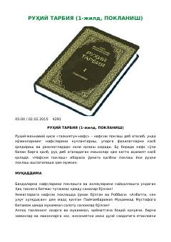

RTNafsni poklash va axloqni sayqallashga bag'ishlangan ma'naviy-ruhiy qo'llanma.
Ushbu kitob inson nafsini poklash, qalbni sayqallash va axloq-odobni yuksaltirishga bag'ishlangan. Asarda Islom dinining ruhiy-ma'naviy ta'limotlari, ibodatlardagi ixlos va nafs tarbiyasiga oid muhim masalalar Qur'on va Sunnat asosida yoritilgan.